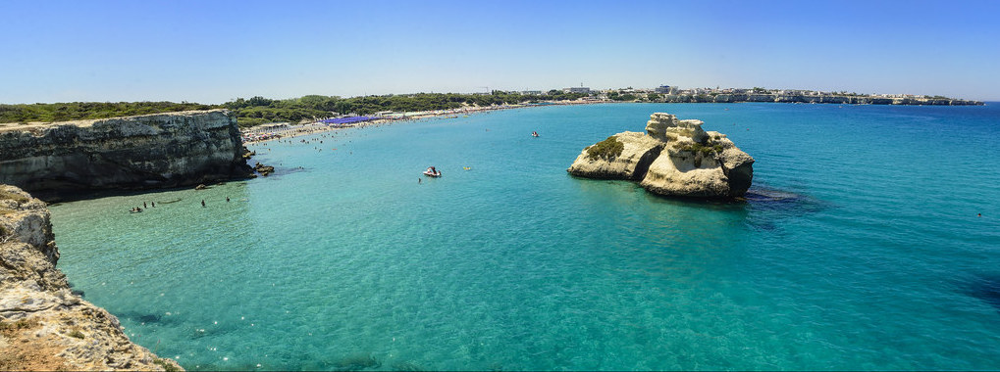

Want to taste it?
Dentoni and Torta Crêpes®: a Family Affair
We are Dentoni. We were born in 1981 by the Adriatic seaside, overlooking one of the most beautiful bays in all the Mediterranean. Take a look if you do not believe us:
Christmas Experiments
On Christmas Eve, 1996, Clelia and Emanuela, our owner ladies and sisters in law, were preparing a sour crêpes-based dish for the Christman lunch. On a whim, one of them (we cannot remeber who any longer) came out with the idea of making a sweet version of the batter and to fill it up with chantilly cream. Once the French-trademarked mix of white and whipped cream had been wrapped inside the sweet pancake, a Nutella® covering ensued and the first ever prototype of our cake was born.
Being pretty awasome to taste, it soon demamded some amanding of the inception recipe to make the hazelnut and chocolate cream withstand fridge temperatures without becoming too hard to bite, something which the Ferrero-made cream cannot do.
After a few tenths of attempts with a lot of tinkering, the cake was ready for our customers and it was an immediate hit!
25 years later, we are proud to say that it is the product which has ratched up the highest success of anything we have ever sold in our shop, making up to 8% of your total yearly revenue as of today.
In the meantime, the brand Torta Crêpes Dentoni® has been legally registered.
How it has been made for 25 years
Here follows a short video demonstrating very briefly (though with no ingredients disclousure) the process we follow to prepare it.
Want it delivered home?
And this is the biggest news. After 25 years of selling it only for customers visiting personally our physical shop, today we aready to launch a new service: home delivery all over Italy ! If you are interested in delighting yourself, please visit our online shop.